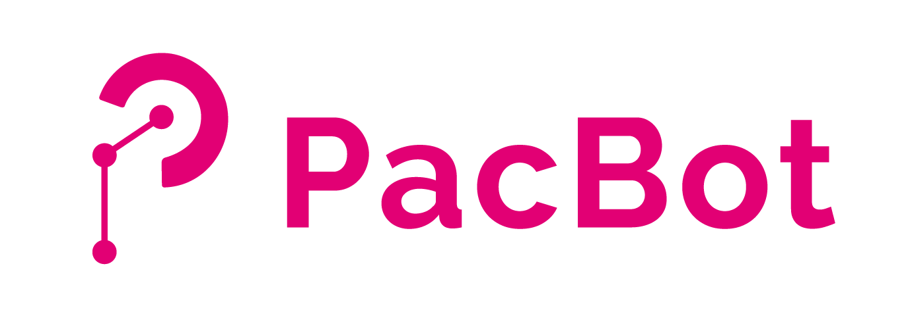
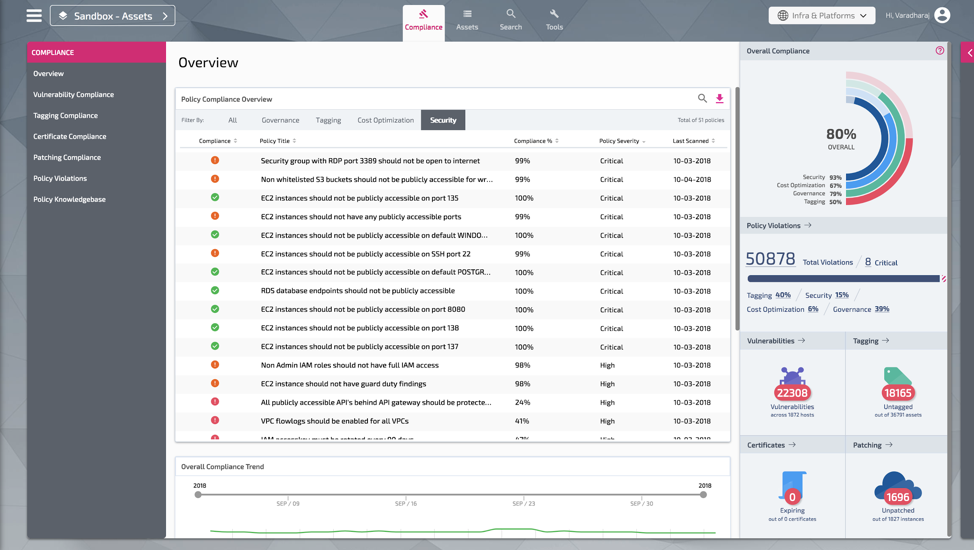
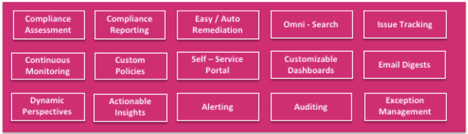
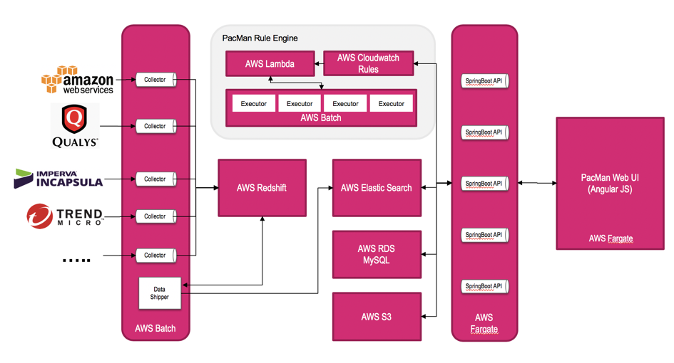

Introducing PacBot
By: VK Varadharaj

Gartner
predicts
that “through 2020, 95 percent of cloud security failures will be the
customer’s fault.”
The very nature of public cloud, the ease at which developers can
create, modify and delete resources –gives us the agility we love but
also makes it easy to overlook security guidelines. The dynamic nature
of the cloud further complicates matters, especially if you have a very
large footprint.
From a recent survey conducted by cybersecurity-insiders.com, these are the most significant cloud security threats:
-
Misconfiguration of the cloud platform/wrong set-up
-
Unauthorized access
-
Insecure interfaces/APIs
-
Hijacking of accounts, services or traffic
At 62 percent, misconfiguration jumped to the number one spot this year as the single biggest threat to cloud security. Misconfiguration becomes increasingly likely as we migrate more workloads to the cloud. Properly configuring cloud resources requires a new set of skills and an understanding of how cloud resources are managed. Traditional security tools are not enough because they are focused on the operating system and application level. A new set of tools are required to mitigate the risks associated with the ‘shared responsibility’ security model of public cloud.
Doing audits and compliance checks a few times a year doesn’t cut it. What is needed is an automated compliance framework that allows us to ensure that security and compliance requirements are being met in real time.
Introducing PacBot: Continuous compliance with policy-as-code
PacBot is a platform for continuous security and compliance assessment, reporting and automation. It assesses our infrastructure against security best practices and T-Mobile internal security and governance policies. We use it to ensure adherence across all of our AWS accounts. PacBot also has ‘auto fixes’ to automatically respond to critical security policy violations.
Policy violations identified by PacBot are presented to asset owners via simple dashboards. These dashboards that make it easy to remediate the issues found. With PacBot we have eliminated the manual drudgery of compliance assessment letting us invest more time mitigating risks and addressing the gaps found.

Screenshot of PacBot - Compliance Landing Page
After initial success with cloud misconfigurations, we branched out into policies to assess SSL certificate expiration, host patch level, vulnerabilities and inventory. PacBot has become the central place to view overall compliance adherence status and has evolved into a generic tool where we can codify any policy and do continuous compliance monitoring.
A Little bit of history …
Late in 2016, when we were looking to solve the automated assessment and cloud misconfiguration problem we had few options. The first version of PacBot was built using AWS Config rules and lambda functions. The limitations around config rules (at that time), combined with the complexity of managing multiple accounts and a never-ending need for customized reports scoped at different levels made us revisit the design.
At that time, a few SaaS players started providing this type of solution. After some test drives, we felt deep integration with existing systems for non-cloud related compliance would be a challenge. We didn’t want to use multiple tools and dashboards and we were not comfortable giving out all of our AWS data either. So we decided to give it a go ourselves and ended up building PacBot as it is now. It was initially named as Policy as Code Manager (PacMan). When we decided to go open source we changed it to avoid confusion with the video game. PacBot is still cute though :).
How does PacBot work?
Assess -> Report -> Remediate -> Repeat is PacBot’s philosophy.
-
A policy is described as code and human readable metadata.
-
Connectors discover resources at a set cadence.
-
Codified policies assess compliance adherence.
-
Policy violation is logged to violation tracker.
-
Violation may be remediated automatically or through 1-click automation.
-
Violations are automatically closed in the next assessment when the problem is fixed at the source.
-
Exception Manager is used for granting exceptions to violations.
-
Sticky Exceptions are exceptions based on a resource matching criteria rather than specific resource IDs (for assets that will be created in future).
Here is a high level roll-up of the capabilities. In next blog post, I will detail out the architecture, different components of the solution and how it works.

Below is a simplified system architecture of PacBot. 
Automatic fixes for misconfigurations…
Our AutoFix journey started with closing publicly accessible S3 buckets. With every codified policy, you can implement an AutoFix hook. Today when any of our developers open an S3 bucket for public read or write, PacBot finds it and sends out a notification to the user about the policy violation and gives 24 hours to fix it. After 24 hours, if an exception is not granted, PacBot revokes the public access automatically.
In a cloud environment, there is continuous deployment and activity. The rate of change is so high that with just monitoring you end up with massive to-do lists. By the time you get around to fixing problems, the information might be out of date. AutoFixes are the best option to reduce the mean time to respond/repair a policy violation.
PacBot also uses data from other systems we’ve built over the course of PacBot’s development history:
-
Blackbox: a central, searchable store of enriched CloudTrail events from all of our AWS accounts.
-
Periscope: a tool for access permissions lookup and reverse lookup for users across all of our AWS accounts.
-
Heimdall: a central repository with critical alerts from security solutions like AWS Guard Duty, Macie, Trend Micro Deep Security, Tripwire and access logs from critical core infrastructure supporting workloads deployed on AWS.
-
Delta: a tool to audit what changes have occurred in our AWS environment in a given time range.
We have plans to open source these as well.
When we decided to open source PacBot, we wanted it to be a simple process to try it out. Our PacBot installer is still in its infancy, but you should be able to get everything up and running with a little help from a cup of coffee.
PacBot is open-sourced under the terms of section 7 of the Apache 2.0 license and is released AS-IS WITHOUT WARRANTIES OR CONDITIONS OF ANY KIND. Check out the project in GitHub.
(Note: PacBot team has made every effort to review and test the presently released version of PacBot. However, as with all security related software, a party’s security team should independently evaluate PacBot and any modifications prior to any use. Refer to the [readme.txt])
Related Posts
Very cool - PacBot (Policy as Code Bot) - https://t.co/qs5r6bRF5N - Continuous compliance monitoring, reporting, and security automation from T-Mobile!
— Jeff Barr ☁️ (@ 🏠 ) 💉 (@jeffbarr) October 10, 2018
"Assess -> Report -> Remediate -> Repeat is PacBot's philosophy." pic.twitter.com/gedCs8mFat
Had a great time talking about T-Mobile's #pacbot at #ossummit tonight with Steve Hull!#tmotech The Linux Foundation https://t.co/sbU65jGW7O
— Nicholas Criss (@nicholascriss) August 22, 2019
Success Story
Github Stats
Tags